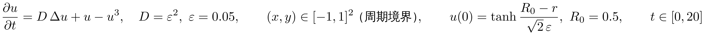
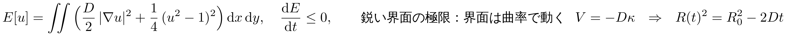
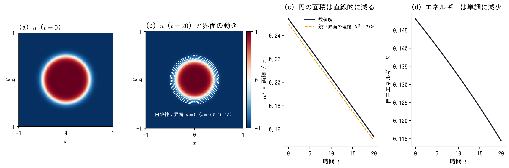

進捗：2 次元の Allen–Cahn 方程式（縮む円）を数値計算で解いた



- 定数：ε = 0.05 が界面の厚さ（D = ε2 = 2.5 × 10−3）．円は曲率で縮み，理論では t = R02/(2D) = 50 で消える
- 解き方：2 次元 Fourier スペクトル法（128 × 128 モード）＋ 指数時間差分法 ETDRK4（Δt = 10−3）
- 確認：Δt を 2 倍で差 5.9 × 10−13，モード数を 2 倍で差 5.1 × 10−12．E は毎ステップ減少（0.148 → 0.114）
- R2 の傾きは −5.04 × 10−3（理論 −2D = −5.00 × 10−3，差 1 %）．t = 20 で R = 0.392（理論 0.387）